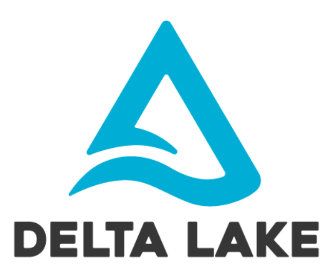
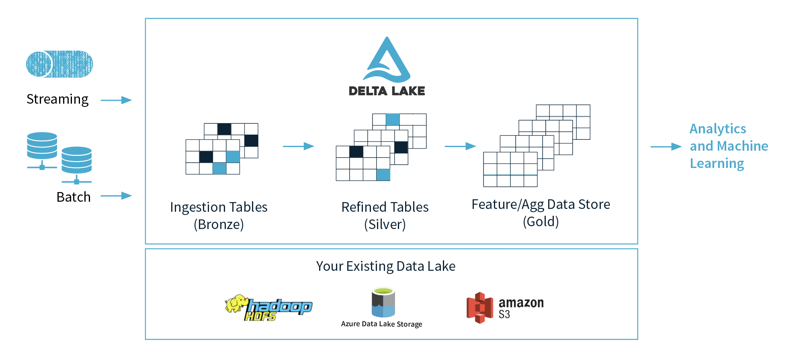

<!DOCTYPE html>
<html>

<head><meta name="generator" content="Hexo 3.8.0">
    <meta charset="utf-8">

    

    
    <title>델타 레이크 소개 | Lawrence&#39;s blog</title>
    
    <meta name="viewport" content="width=device-width, initial-scale=1, maximum-scale=1">
    
    <meta name="keywords" content="">
    
    <meta name="description" content="개요 Delta Lake는 데이터 레이크에 안정성을 제공하는 오픈 소스 스토리지 계층입니다. ACID 트랜잭션을 제공하고, 확장 가능한 메타데이터를 처리하고, 스트리밍 및 일괄 처리 데이터 처리를 통합합니다. Delta Lake는 기존 데이터 레이크를 기반으로 하여 실행되며 Apache Spark API와 완벽하게 호환됩니다.  Deltalake 주요 특징">
<meta property="og:type" content="article">
<meta property="og:title" content="델타 레이크 소개">
<meta property="og:url" content="http://blog.lawrence.pe.kr/2021/02/01/2021-02-01-deltalake-overview/index.html">
<meta property="og:site_name" content="Lawrence&#39;s blog">
<meta property="og:description" content="개요 Delta Lake는 데이터 레이크에 안정성을 제공하는 오픈 소스 스토리지 계층입니다. ACID 트랜잭션을 제공하고, 확장 가능한 메타데이터를 처리하고, 스트리밍 및 일괄 처리 데이터 처리를 통합합니다. Delta Lake는 기존 데이터 레이크를 기반으로 하여 실행되며 Apache Spark API와 완벽하게 호환됩니다.  Deltalake 주요 특징">
<meta property="og:locale" content="ko">
<meta property="og:image" content="http://blog.lawrence.pe.kr/2021/02/01/2021-02-01-deltalake-overview/delta-lake-logo-tm.png">
<meta property="og:updated_time" content="2021-02-01T03:00:06.477Z">
<meta name="twitter:card" content="summary">
<meta name="twitter:title" content="델타 레이크 소개">
<meta name="twitter:description" content="개요 Delta Lake는 데이터 레이크에 안정성을 제공하는 오픈 소스 스토리지 계층입니다. ACID 트랜잭션을 제공하고, 확장 가능한 메타데이터를 처리하고, 스트리밍 및 일괄 처리 데이터 처리를 통합합니다. Delta Lake는 기존 데이터 레이크를 기반으로 하여 실행되며 Apache Spark API와 완벽하게 호환됩니다.  Deltalake 주요 특징">
<meta name="twitter:image" content="http://blog.lawrence.pe.kr/2021/02/01/2021-02-01-deltalake-overview/delta-lake-logo-tm.png">
    
    <link rel="canonical" href="http://blog.lawrence.pe.kr/2021/02/01/2021-02-01-deltalake-overview/">

    

    

    <link rel="stylesheet" href="/libs/font-awesome/css/font-awesome.min.css">
    <link rel="stylesheet" href="/libs/titillium-web/styles.css">
    <link rel="stylesheet" href="/libs/source-code-pro/styles.css">

    <link rel="stylesheet" href="/css/style.css">

    <script src="/libs/jquery/3.3.1/jquery.min.js"></script>
    
    
        <link rel="stylesheet" href="/libs/lightgallery/css/lightgallery.min.css">
    
    
        <link rel="stylesheet" href="/libs/justified-gallery/justifiedGallery.min.css">
    
    
    


</head></html>
<body>
    <div id="wrap">
        <header id="header">
    <div id="header-outer" class="outer">
        <div class="container">
            <div class="container-inner">
                <div id="header-title">
                    <h1 class="logo-wrap">
                        <a href="/" class="logo"></a>
                    </h1>
                    
                        <h2 class="subtitle-wrap">
                            <p class="subtitle">the law of development</p>
                        </h2>
                    
                </div>
                <div id="header-inner" class="nav-container">
                    <a id="main-nav-toggle" class="nav-icon fa fa-bars"></a>
                    <div class="nav-container-inner">
                        <ul id="main-nav">
                            
                                <li class="main-nav-list-item">
                                    <a class="main-nav-list-link" href="/">홈</a>
                                </li>
                            
                                        <ul class="main-nav-list"><li class="main-nav-list-item"><a class="main-nav-list-link" href="/categories/Blog/">Blog</a></li><li class="main-nav-list-item"><a class="main-nav-list-link" href="/categories/Data-Engineering/">Data Engineering</a><ul class="main-nav-list-child"><li class="main-nav-list-item"><a class="main-nav-list-link" href="/categories/Data-Engineering/Deltalake/">Deltalake</a></li><li class="main-nav-list-item"><a class="main-nav-list-link" href="/categories/Data-Engineering/ElasticSearch/">ElasticSearch</a></li></ul></li><li class="main-nav-list-item"><a class="main-nav-list-link" href="/categories/Frontend/">Frontend</a><ul class="main-nav-list-child"><li class="main-nav-list-item"><a class="main-nav-list-link" href="/categories/Frontend/Electron/">Electron</a></li></ul></li><li class="main-nav-list-item"><a class="main-nav-list-link" href="/categories/Git/">Git</a></li><li class="main-nav-list-item"><a class="main-nav-list-link" href="/categories/Gossip/">Gossip</a><ul class="main-nav-list-child"><li class="main-nav-list-item"><a class="main-nav-list-link" href="/categories/Gossip/diary/">diary</a></li></ul></li><li class="main-nav-list-item"><a class="main-nav-list-link" href="/categories/Language/">Language</a><ul class="main-nav-list-child"><li class="main-nav-list-item"><a class="main-nav-list-link" href="/categories/Language/Java/">Java</a></li></ul></li></ul>
                                    
                                <li class="main-nav-list-item">
                                    <a class="main-nav-list-link" href="https://www.linkedin.com/in/kyeongbeom-kim-lawrence-62606979/" rel="external nofollow noopener noreferrer" target="_blank">About</a>
                                </li>
                            
                        </ul>
                        <nav id="sub-nav">
                            <div id="search-form-wrap">

    <form class="search-form">
        <input type="text" class="ins-search-input search-form-input" placeholder="검색">
        <button type="submit" class="search-form-submit"></button>
    </form>
    <div class="ins-search">
    <div class="ins-search-mask"></div>
    <div class="ins-search-container">
        <div class="ins-input-wrapper">
            <input type="text" class="ins-search-input" placeholder="Type something...">
            <span class="ins-close ins-selectable"><i class="fa fa-times-circle"></i></span>
        </div>
        <div class="ins-section-wrapper">
            <div class="ins-section-container"></div>
        </div>
    </div>
</div>
<script>
(function (window) {
    var INSIGHT_CONFIG = {
        TRANSLATION: {
            POSTS: '포스트',
            PAGES: 'Pages',
            CATEGORIES: '카테고리',
            TAGS: '태그',
            UNTITLED: '(Untitled)',
        },
        ROOT_URL: '/',
        CONTENT_URL: '/content.json',
    };
    window.INSIGHT_CONFIG = INSIGHT_CONFIG;
})(window);
</script>
<script src="/js/insight.js"></script>

</div>
                        </nav>
                    </div>
                </div>
            </div>
        </div>
    </div>
</header>
        <div class="container">
            <div class="main-body container-inner">
                <div class="main-body-inner">
                    <section id="main">
                        <div class="main-body-header">
    <h1 class="header">
    
    <a class="page-title-link" href="/categories/Data-Engineering/">Data Engineering</a><i class="icon fa fa-angle-right"></i><a class="page-title-link" href="/categories/Data-Engineering/Deltalake/">Deltalake</a>
    </h1>
</div>

                        <div class="main-body-content">
                            <article id="post-2021-02-01-deltalake-overview" class="article article-single article-type-post" itemscope="" itemprop="blogPost">
    <div class="article-inner">
        
            <header class="article-header">
                
    
        <h1 class="article-title" itemprop="name">
        델타 레이크 소개
        </h1>
    

            </header>
        
        
            <div class="article-meta">
                
    <div class="article-date">
        <a href="/2021/02/01/2021-02-01-deltalake-overview/" class="article-date">
            <time datetime="2021-02-01T02:21:30.000Z" itemprop="datePublished">2021-02-01</time>
        </a>
    </div>

		

                
            </div>
        
        
        <div class="article-entry" itemprop="articleBody">
            <h1 id="개요"><a href="#개요" class="headerlink" title="개요"></a>개요</h1><p></p>
<p>Delta Lake는 데이터 레이크에 안정성을 제공하는 오픈 소스 스토리지 계층입니다. ACID 트랜잭션을 제공하고, 확장 가능한 메타데이터를 처리하고, 스트리밍 및 일괄 처리 데이터 처리를 통합합니다. Delta Lake는 기존 데이터 레이크를 기반으로 하여 실행되며 Apache Spark API와 완벽하게 호환됩니다.</p>
<p></p>
<h2 id="Deltalake-주요-특징"><a href="#Deltalake-주요-특징" class="headerlink" title="Deltalake 주요 특징"></a>Deltalake 주요 특징</h2><p>아래는 Deltalake의 주요 특징입니다.</p>
<h3 id="ACID-트랜잭션-on-Spark"><a href="#ACID-트랜잭션-on-Spark" class="headerlink" title="ACID 트랜잭션 on Spark"></a>ACID 트랜잭션 on Spark</h3><p>스파크의 약점아닌 약점은 ACID 트랜잭션이 불가하다는 것입니다. 델타레이크를 사용하면 스파크에서도 데이터에 ACID 트랜잭션을 적용할 수 있습니다. 이를 통해 데이터를 더욱 다채롭게 처리할 수 있습니다.</p>
<h3 id="스트리밍-및-배치-통합"><a href="#스트리밍-및-배치-통합" class="headerlink" title="스트리밍 및 배치 통합"></a>스트리밍 및 배치 통합</h3><p>델타 레이크의 테이블은 배치 테이블이면서 스트리밍 소스, 싱크로 활용할 수 있습니다. 결론적으로 스트리밍 데이터를 수집하거나 인터렉티브한 쿼리를 수행하는 모든 작업이 기본적으로 가능합니다. 스트리밍 처리에 대해서는 아래 주요기능 &amp; 사용법에서 더 자세하게 살펴보겠습니다.</p>
<h3 id="스키마-강제"><a href="#스키마-강제" class="headerlink" title="스키마 강제"></a>스키마 강제</h3><p>수집 중에 잘못된 레코드가 삽입되지 않도록 스키마의 변형을 감지하여 처리합니다.</p>
<h3 id="시간-여행-Time-travel"><a href="#시간-여행-Time-travel" class="headerlink" title="시간 여행(Time travel)"></a>시간 여행(Time travel)</h3><p>데이터의 버전 관리를 통해 롤백(rollback), 전체 기록 감사 추적 및 재현 가능한 기계 학습 실험을 수행 할 수 있습니다.</p>
<h3 id="Upserts와-Delete"><a href="#Upserts와-Delete" class="headerlink" title="Upserts와 Delete"></a>Upserts와 Delete</h3><p>머지, 업데이트, 삭제 명령을 지원하여 변경 데이터 캡처, SCD (slowly-changing-dimension) 작업, 스트리밍 upsert 등과 같은 복잡한 처리를 지원합니다.</p>
<h2 id="주요기능-amp-사용법"><a href="#주요기능-amp-사용법" class="headerlink" title="주요기능 &amp; 사용법"></a>주요기능 &amp; 사용법</h2><h2 id="사용법"><a href="#사용법" class="headerlink" title="사용법"></a>사용법</h2><h3 id="1-Run-interactively"><a href="#1-Run-interactively" class="headerlink" title="1. Run interactively"></a>1. Run interactively</h3><p>스파크 쉘을 실행 할 때 —packages 옵션을 통해 델타레이크를 넣으면 쉘에서 코드 스니펫을 수행할 수 있습니다.</p>
<h3 id="2-Run-as-a-project"><a href="#2-Run-as-a-project" class="headerlink" title="2.Run as a project"></a>2.Run as a project</h3><p>Maven이나 SBT를 통해 프로젝트를 구성하고 델타레이크 의존성을 추가하여 코드 스니펫을 수행하고 프로젝트를 수행할 수 있습니다. 이 페이지에서 <a href="https://github.com/delta-io/delta/tree/master/examples" rel="external nofollow noopener noreferrer" target="_blank">예제</a>를 찾을 수 있습니다.</p>
<figure class="highlight scala"><table><tr><td class="gutter"><pre><span class="line">1</span><br></pre></td><td class="code"><pre><span class="line">bin/spark-shell --packages io.delta:delta-core_2<span class="number">.12</span>:<span class="number">0.7</span><span class="number">.0</span> --conf <span class="string">"spark.sql.extensions=io.delta.sql.DeltaSparkSessionExtension"</span> --conf <span class="string">"spark.sql.catalog.spark_catalog=org.apache.spark.sql.delta.catalog.DeltaCatalog"</span></span><br></pre></td></tr></table></figure>
<h2 id="테이블-생성하기"><a href="#테이블-생성하기" class="headerlink" title="테이블 생성하기"></a>테이블 생성하기</h2><p>Delta table은 Dataframe을 delta포맷으로 써서 만들 수 있습니다.</p>
<figure class="highlight scala"><table><tr><td class="gutter"><pre><span class="line">1</span><br><span class="line">2</span><br></pre></td><td class="code"><pre><span class="line"><span class="keyword">val</span> data = spark.range(<span class="number">0</span>, <span class="number">5</span>)</span><br><span class="line">data.write.format(<span class="string">"delta"</span>).save(<span class="string">"/tmp/delta-table"</span>)</span><br></pre></td></tr></table></figure>
<h2 id="데이터-읽기"><a href="#데이터-읽기" class="headerlink" title="데이터 읽기"></a>데이터 읽기</h2><p>Delta table 파일의 경로를 명시하여 데이터를 읽을 수 있습니다.</p>
<figure class="highlight scala"><table><tr><td class="gutter"><pre><span class="line">1</span><br><span class="line">2</span><br></pre></td><td class="code"><pre><span class="line"><span class="keyword">val</span> df = spark.read.format(<span class="string">"delta"</span>).load(<span class="string">"/tmp/delta-table"</span>)</span><br><span class="line">df.show()</span><br></pre></td></tr></table></figure>
<h2 id="데이터-수정-update-하기"><a href="#데이터-수정-update-하기" class="headerlink" title="데이터 수정(update)하기"></a>데이터 수정(update)하기</h2><h3 id="Overwrite"><a href="#Overwrite" class="headerlink" title="Overwrite"></a>Overwrite</h3><figure class="highlight scala"><table><tr><td class="gutter"><pre><span class="line">1</span><br><span class="line">2</span><br><span class="line">3</span><br></pre></td><td class="code"><pre><span class="line"><span class="keyword">val</span> data = spark.range(<span class="number">5</span>, <span class="number">10</span>)</span><br><span class="line">data.write.format(<span class="string">"delta"</span>).mode(<span class="string">"overwrite"</span>).save(<span class="string">"/tmp/delta-table"</span>)</span><br><span class="line">df.show()</span><br></pre></td></tr></table></figure>
<h3 id="Conditional-update-without-overwrite"><a href="#Conditional-update-without-overwrite" class="headerlink" title="Conditional update without overwrite"></a>Conditional update without overwrite</h3><p>Delta lake는 조건부 update, delete, merge(upsert)할 수 있는 API를 제공합니다.</p>
<figure class="highlight scala"><table><tr><td class="gutter"><pre><span class="line">1</span><br><span class="line">2</span><br><span class="line">3</span><br><span class="line">4</span><br><span class="line">5</span><br><span class="line">6</span><br><span class="line">7</span><br><span class="line">8</span><br><span class="line">9</span><br><span class="line">10</span><br><span class="line">11</span><br><span class="line">12</span><br><span class="line">13</span><br><span class="line">14</span><br><span class="line">15</span><br><span class="line">16</span><br><span class="line">17</span><br><span class="line">18</span><br><span class="line">19</span><br><span class="line">20</span><br><span class="line">21</span><br><span class="line">22</span><br><span class="line">23</span><br><span class="line">24</span><br><span class="line">25</span><br><span class="line">26</span><br><span class="line">27</span><br></pre></td><td class="code"><pre><span class="line"><span class="keyword">import</span> io.delta.tables._</span><br><span class="line"><span class="keyword">import</span> org.apache.spark.sql.functions._</span><br><span class="line"></span><br><span class="line"><span class="keyword">val</span> deltaTable = <span class="type">DeltaTable</span>.forPath(<span class="string">"/tmp/delta-table"</span>)</span><br><span class="line"></span><br><span class="line"><span class="comment">// Update every even value by adding 100 to it</span></span><br><span class="line">deltaTable.update(</span><br><span class="line">  condition = expr(<span class="string">"id % 2 == 0"</span>),</span><br><span class="line">  set = <span class="type">Map</span>(<span class="string">"id"</span> -&gt; expr(<span class="string">"id + 100"</span>)))</span><br><span class="line"></span><br><span class="line"><span class="comment">// Delete every even value</span></span><br><span class="line">deltaTable.delete(condition = expr(<span class="string">"id % 2 == 0"</span>))</span><br><span class="line"></span><br><span class="line"><span class="comment">// Upsert (merge) new data</span></span><br><span class="line"><span class="keyword">val</span> newData = spark.range(<span class="number">0</span>, <span class="number">20</span>).toDF</span><br><span class="line"></span><br><span class="line">deltaTable.as(<span class="string">"oldData"</span>)</span><br><span class="line">  .merge(</span><br><span class="line">    newData.as(<span class="string">"newData"</span>),</span><br><span class="line">    <span class="string">"oldData.id = newData.id"</span>)</span><br><span class="line">  .whenMatched</span><br><span class="line">  .update(<span class="type">Map</span>(<span class="string">"id"</span> -&gt; col(<span class="string">"newData.id"</span>)))</span><br><span class="line">  .whenNotMatched</span><br><span class="line">  .insert(<span class="type">Map</span>(<span class="string">"id"</span> -&gt; col(<span class="string">"newData.id"</span>)))</span><br><span class="line">  .execute()</span><br><span class="line"></span><br><span class="line">deltaTable.toDF.show()</span><br></pre></td></tr></table></figure>
<h3 id="time-travel을-이용한-과거-데이터-조회"><a href="#time-travel을-이용한-과거-데이터-조회" class="headerlink" title="time travel을 이용한 과거 데이터 조회"></a>time travel을 이용한 과거 데이터 조회</h3><p>time travel을 이용하여 Delta table의 이전 스냅샷을 조회(query)할 수 있습니다. <code>versionAsOf</code> 옵션을 사용하세요. time travel에 대한 더 자세한 사항은 <a href="https://docs.delta.io/latest/delta-batch.html#-deltatimetravel" rel="external nofollow noopener noreferrer" target="_blank">이 페이지</a>에서 확인할 수 있습니다.</p>
<figure class="highlight scala"><table><tr><td class="gutter"><pre><span class="line">1</span><br><span class="line">2</span><br></pre></td><td class="code"><pre><span class="line"><span class="keyword">val</span> df = spark.read.format(<span class="string">"delta"</span>).option(<span class="string">"versionAsOf"</span>, <span class="number">0</span>).load(<span class="string">"/tmp/delta-table"</span>)</span><br><span class="line">df.show()</span><br></pre></td></tr></table></figure>
<h3 id="테이블로-스트림-데이터-쓰기"><a href="#테이블로-스트림-데이터-쓰기" class="headerlink" title="테이블로 스트림 데이터 쓰기"></a>테이블로 스트림 데이터 쓰기</h3><p>Structured Streaming을 이용해 Delta에 데이터를 쓸 수 있습니다. Delta lake의 트랜잭션 로그는 exactly-once 처리를 보장합니다. 기본적으로 스트림은 append 모드입니다.</p>
<figure class="highlight scala"><table><tr><td class="gutter"><pre><span class="line">1</span><br><span class="line">2</span><br></pre></td><td class="code"><pre><span class="line"><span class="keyword">val</span> streamingDf = spark.readStream.format(<span class="string">"rate"</span>).load()</span><br><span class="line"><span class="keyword">val</span> stream = streamingDf.select($<span class="string">"value"</span> as <span class="string">"id"</span>).writeStream.format(<span class="string">"delta"</span>).option(<span class="string">"checkpointLocation"</span>, <span class="string">"/tmp/checkpoint"</span>).start(<span class="string">"/tmp/delta-table"</span>)</span><br></pre></td></tr></table></figure>
<h3 id="테이블에서-스트림으로-읽기"><a href="#테이블에서-스트림으로-읽기" class="headerlink" title="테이블에서 스트림으로 읽기"></a>테이블에서 스트림으로 읽기</h3><figure class="highlight scala"><table><tr><td class="gutter"><pre><span class="line">1</span><br></pre></td><td class="code"><pre><span class="line"><span class="keyword">val</span> stream2 = spark.readStream.format(<span class="string">"delta"</span>).load(<span class="string">"/tmp/delta-table"</span>).writeStream.format(<span class="string">"console"</span>).start()</span><br></pre></td></tr></table></figure>
<h1 id="References"><a href="#References" class="headerlink" title="References"></a>References</h1><p><a href="https://docs.microsoft.com/ko-kr/azure/databricks/delta/" rel="external nofollow noopener noreferrer" target="_blank">https://docs.microsoft.com/ko-kr/azure/databricks/delta/</a></p>

        </div>
        <footer class="article-footer">
            


    <a data-url="http://blog.lawrence.pe.kr/2021/02/01/2021-02-01-deltalake-overview/" data-id="ckklzszb2000ij1xrslzezsfb" class="article-share-link"><i class="fa fa-share"></i>공유하기</a>
<script>
    (function ($) {
        $('body').on('click', function() {
            $('.article-share-box.on').removeClass('on');
        }).on('click', '.article-share-link', function(e) {
            e.stopPropagation();

            var $this = $(this),
                url = $this.attr('data-url'),
                encodedUrl = encodeURIComponent(url),
                id = 'article-share-box-' + $this.attr('data-id'),
                offset = $this.offset(),
                box;

            if ($('#' + id).length) {
                box = $('#' + id);

                if (box.hasClass('on')){
                    box.removeClass('on');
                    return;
                }
            } else {
                var html = [
                    '<div id="' + id + '" class="article-share-box">',
                        '<input class="article-share-input" value="' + url + '">',
                        '<div class="article-share-links">',
                            '<a href="https://twitter.com/intent/tweet?url=' + encodedUrl + '" class="article-share-twitter" target="_blank" title="Twitter"></a>',
                            '<a href="https://www.facebook.com/sharer.php?u=' + encodedUrl + '" class="article-share-facebook" target="_blank" title="Facebook"></a>',
                            '<a href="http://pinterest.com/pin/create/button/?url=' + encodedUrl + '" class="article-share-pinterest" target="_blank" title="Pinterest"></a>',
                            '<a href="https://plus.google.com/share?url=' + encodedUrl + '" class="article-share-google" target="_blank" title="Google+"></a>',
                        '</div>',
                    '</div>'
                ].join('');

              box = $(html);

              $('body').append(box);
            }

            $('.article-share-box.on').hide();

            box.css({
                top: offset.top + 25,
                left: offset.left
            }).addClass('on');

        }).on('click', '.article-share-box', function (e) {
            e.stopPropagation();
        }).on('click', '.article-share-box-input', function () {
            $(this).select();
        }).on('click', '.article-share-box-link', function (e) {
            e.preventDefault();
            e.stopPropagation();

            window.open(this.href, 'article-share-box-window-' + Date.now(), 'width=500,height=450');
        });
    })(jQuery);
</script>

        </footer>
    </div>
    <script type="application/ld+json">
    {
        "@context": "https://schema.org",
        "@type": "BlogPosting",
        "author": {
            "@type": "Person",
            "name": "Lawrence Kim"
        },
        "headline": "델타 레이크 소개",
        "image": "http://blog.lawrence.pe.kr./delta-lake-logo-tm.png",
        "keywords": "",
        "genre": "Data Engineering Deltalake",
        "datePublished": "2021-02-01",
        "dateCreated": "2021-02-01",
        "dateModified": "2021-02-01",
        "url": "http://blog.lawrence.pe.kr/2021/02/01/2021-02-01-deltalake-overview/",
        "description": "개요
Delta Lake는 데이터 레이크에 안정성을 제공하는 오픈 소스 스토리지 계층입니다. ACID 트랜잭션을 제공하고, 확장 가능한 메타데이터를 처리하고, 스트리밍 및 일괄 처리 데이터 처리를 통합합니다. Delta Lake는 기존 데이터 레이크를 기반으로 하여 실행되며 Apache Spark API와 완벽하게 호환됩니다.

Deltalake 주요 특징"
        "wordCount": 693
    }
</script>

</article>

    <section id="comments">
    
        
    <div id="disqus_thread">
        <noscript>Please enable JavaScript to view the <a href="//disqus.com/?ref_noscript">comments powered by Disqus.</a></noscript>
    </div>

    
    </section>


                        </div>
                    </section>
                    <aside id="sidebar">
    <a class="sidebar-toggle" title="Expand Sidebar"><i class="toggle icon"></i></a>
    <div class="sidebar-top">
        <p>팔로우:</p>
        <ul class="social-links">
            
                
                <li>
                    <a class="social-tooltip" title="twitter" href="https://twitter.com/Pr_Lawrence" target="_blank" rel="external nofollow noopener noreferrer">
                        <i class="icon fa fa-twitter"></i>
                    </a>
                </li>
                
            
                
                <li>
                    <a class="social-tooltip" title="facebook" href="https://www.facebook.com/kyeongbeom.kim.5" target="_blank" rel="external nofollow noopener noreferrer">
                        <i class="icon fa fa-facebook"></i>
                    </a>
                </li>
                
            
                
                <li>
                    <a class="social-tooltip" title="github" href="https://github.com/pr-lawrence" target="_blank" rel="external nofollow noopener noreferrer">
                        <i class="icon fa fa-github"></i>
                    </a>
                </li>
                
            
        </ul>
    </div>
    
        
<nav id="article-nav">
    
    
        <a href="/2021/01/02/2021-01-02-new-year-plan/" id="article-nav-older" class="article-nav-link-wrap">
        <strong class="article-nav-caption">오래된</strong>
        <p class="article-nav-title">새해 다짐</p>
        <i class="icon fa fa-chevron-left" id="icon-chevron-left"></i>
        </a>
    
</nav>

    
    <div class="widgets-container">
        
            
                

            
                
    <div class="widget-wrap">
        <h3 class="widget-title">최근 글</h3>
        <div class="widget">
            <ul id="recent-post" class="no-thumbnail">
                
                    <li>
                        
                        <div class="item-inner">
                            <p class="item-category"><a class="article-category-link" href="/categories/Data-Engineering/">Data Engineering</a><i class="icon fa fa-angle-right"></i><a class="article-category-link" href="/categories/Data-Engineering/Deltalake/">Deltalake</a></p>
                            <p class="item-title"><a href="/2021/02/01/2021-02-01-deltalake-overview/" class="title">델타 레이크 소개</a></p>
                            <p class="item-date"><time datetime="2021-02-01T02:21:30.000Z" itemprop="datePublished">2021-02-01</time></p>
                        </div>
                    </li>
                
                    <li>
                        
                        <div class="item-inner">
                            <p class="item-category"><a class="article-category-link" href="/categories/Gossip/">Gossip</a><i class="icon fa fa-angle-right"></i><a class="article-category-link" href="/categories/Gossip/diary/">diary</a></p>
                            <p class="item-title"><a href="/2021/01/02/2021-01-02-new-year-plan/" class="title">새해 다짐</a></p>
                            <p class="item-date"><time datetime="2021-01-02T14:53:24.000Z" itemprop="datePublished">2021-01-02</time></p>
                        </div>
                    </li>
                
                    <li>
                        
                        <div class="item-inner">
                            <p class="item-category"><a class="article-category-link" href="/categories/Git/">Git</a></p>
                            <p class="item-title"><a href="/2020/01/04/2020-01-04-git-language/" class="title">Git 한글에서 영어로 바꾸기</a></p>
                            <p class="item-date"><time datetime="2020-01-04T14:55:01.000Z" itemprop="datePublished">2020-01-04</time></p>
                        </div>
                    </li>
                
                    <li>
                        
                        <div class="item-inner">
                            <p class="item-category"><a class="article-category-link" href="/categories/Data-Engineering/">Data Engineering</a><i class="icon fa fa-angle-right"></i><a class="article-category-link" href="/categories/Data-Engineering/ElasticSearch/">ElasticSearch</a></p>
                            <p class="item-title"><a href="/2019/08/08/2019-08-08-how-to-install-elasticsearch/" class="title">엘라스틱서치 소개</a></p>
                            <p class="item-date"><time datetime="2019-08-08T14:29:26.000Z" itemprop="datePublished">2019-08-08</time></p>
                        </div>
                    </li>
                
                    <li>
                        
                        <div class="item-inner">
                            <p class="item-category"><a class="article-category-link" href="/categories/Language/">Language</a><i class="icon fa fa-angle-right"></i><a class="article-category-link" href="/categories/Language/Java/">Java</a></p>
                            <p class="item-title"><a href="/2019/05/31/2019-05-31-jdk8-default-gc/" class="title">JDK8에서 기본 GC(Garbage Collector)</a></p>
                            <p class="item-date"><time datetime="2019-05-31T13:51:04.000Z" itemprop="datePublished">2019-05-31</time></p>
                        </div>
                    </li>
                
            </ul>
        </div>
    </div>

            
                
    <div class="widget-wrap widget-list">
        <h3 class="widget-title">카테고리</h3>
        <div class="widget">
            <ul class="category-list"><li class="category-list-item"><a class="category-list-link" href="/categories/Blog/">Blog</a><span class="category-list-count">1</span></li><li class="category-list-item"><a class="category-list-link" href="/categories/Data-Engineering/">Data Engineering</a><span class="category-list-count">2</span><ul class="category-list-child"><li class="category-list-item"><a class="category-list-link" href="/categories/Data-Engineering/Deltalake/">Deltalake</a><span class="category-list-count">1</span></li><li class="category-list-item"><a class="category-list-link" href="/categories/Data-Engineering/ElasticSearch/">ElasticSearch</a><span class="category-list-count">1</span></li></ul></li><li class="category-list-item"><a class="category-list-link" href="/categories/Frontend/">Frontend</a><span class="category-list-count">1</span><ul class="category-list-child"><li class="category-list-item"><a class="category-list-link" href="/categories/Frontend/Electron/">Electron</a><span class="category-list-count">1</span></li></ul></li><li class="category-list-item"><a class="category-list-link" href="/categories/Git/">Git</a><span class="category-list-count">1</span></li><li class="category-list-item"><a class="category-list-link" href="/categories/Gossip/">Gossip</a><span class="category-list-count">2</span><ul class="category-list-child"><li class="category-list-item"><a class="category-list-link" href="/categories/Gossip/diary/">diary</a><span class="category-list-count">2</span></li></ul></li><li class="category-list-item"><a class="category-list-link" href="/categories/Language/">Language</a><span class="category-list-count">1</span><ul class="category-list-child"><li class="category-list-item"><a class="category-list-link" href="/categories/Language/Java/">Java</a><span class="category-list-count">1</span></li></ul></li></ul>
        </div>
    </div>


            
                
    <div class="widget-wrap widget-list">
        <h3 class="widget-title">아카이브</h3>
        <div class="widget">
            <ul class="archive-list"><li class="archive-list-item"><a class="archive-list-link" href="/archives/2021/02/">2월 2021</a><span class="archive-list-count">1</span></li><li class="archive-list-item"><a class="archive-list-link" href="/archives/2021/01/">1월 2021</a><span class="archive-list-count">1</span></li><li class="archive-list-item"><a class="archive-list-link" href="/archives/2020/01/">1월 2020</a><span class="archive-list-count">1</span></li><li class="archive-list-item"><a class="archive-list-link" href="/archives/2019/08/">8월 2019</a><span class="archive-list-count">1</span></li><li class="archive-list-item"><a class="archive-list-link" href="/archives/2019/05/">5월 2019</a><span class="archive-list-count">1</span></li><li class="archive-list-item"><a class="archive-list-link" href="/archives/2019/02/">2월 2019</a><span class="archive-list-count">1</span></li><li class="archive-list-item"><a class="archive-list-link" href="/archives/2019/01/">1월 2019</a><span class="archive-list-count">2</span></li></ul>
        </div>
    </div>


            
                
    <div class="widget-wrap widget-list">
        <h3 class="widget-title">태그</h3>
        <div class="widget">
            <ul class="tag-list"><li class="tag-list-item"><a class="tag-list-link" href="/tags/blog/">blog</a><span class="tag-list-count">1</span></li><li class="tag-list-item"><a class="tag-list-link" href="/tags/elasticsearch/">elasticsearch</a><span class="tag-list-count">1</span></li><li class="tag-list-item"><a class="tag-list-link" href="/tags/electron/">electron</a><span class="tag-list-count">1</span></li><li class="tag-list-item"><a class="tag-list-link" href="/tags/gc/">gc</a><span class="tag-list-count">1</span></li><li class="tag-list-item"><a class="tag-list-link" href="/tags/git/">git</a><span class="tag-list-count">1</span></li><li class="tag-list-item"><a class="tag-list-link" href="/tags/git-config/">git-config</a><span class="tag-list-count">1</span></li><li class="tag-list-item"><a class="tag-list-link" href="/tags/git-language-setting/">git-language-setting</a><span class="tag-list-count">1</span></li><li class="tag-list-item"><a class="tag-list-link" href="/tags/github-pages/">github pages</a><span class="tag-list-count">1</span></li><li class="tag-list-item"><a class="tag-list-link" href="/tags/hexo/">hexo</a><span class="tag-list-count">1</span></li><li class="tag-list-item"><a class="tag-list-link" href="/tags/jdk/">jdk</a><span class="tag-list-count">1</span></li><li class="tag-list-item"><a class="tag-list-link" href="/tags/tldr/">tldr</a><span class="tag-list-count">1</span></li></ul>
        </div>
    </div>


            
                
    <div class="widget-wrap widget-float">
        <h3 class="widget-title">태그 클라우드</h3>
        <div class="widget tagcloud">
            <a href="/tags/blog/" style="font-size: 10px;">blog</a> <a href="/tags/elasticsearch/" style="font-size: 10px;">elasticsearch</a> <a href="/tags/electron/" style="font-size: 10px;">electron</a> <a href="/tags/gc/" style="font-size: 10px;">gc</a> <a href="/tags/git/" style="font-size: 10px;">git</a> <a href="/tags/git-config/" style="font-size: 10px;">git-config</a> <a href="/tags/git-language-setting/" style="font-size: 10px;">git-language-setting</a> <a href="/tags/github-pages/" style="font-size: 10px;">github pages</a> <a href="/tags/hexo/" style="font-size: 10px;">hexo</a> <a href="/tags/jdk/" style="font-size: 10px;">jdk</a> <a href="/tags/tldr/" style="font-size: 10px;">tldr</a>
        </div>
    </div>


            
                
    <div class="widget-wrap widget-list">
        <h3 class="widget-title">링크</h3>
        <div class="widget">
            <ul>
                
                    <li>
                        <a href="http://hexo.io" rel="external nofollow noopener noreferrer" target="_blank">Hexo</a>
                    </li>
                
            </ul>
        </div>
    </div>


            
        
    </div>
</aside>

                </div>
            </div>
        </div>
        <footer id="footer">
    <div class="container">
        <div class="container-inner">
            <a id="back-to-top" href="javascript:;"><i class="icon fa fa-angle-up"></i></a>
            <div class="credit">
                <h1 class="logo-wrap">
                    <a href="/" class="logo"></a>
                </h1>
                <p>&copy; 2021 Lawrence Kim</p>
                <p>Powered by <a href="//hexo.io/" target="_blank">Hexo</a>. Theme by <a href="//github.com/ppoffice" target="_blank">PPOffice</a></p>
            </div>
            <div class="footer-plugins">
              
    


            </div>
        </div>
    </div>
</footer>

        
    
    <script>
    var disqus_shortname = 'hexo-theme-hueman';
    
    
    var disqus_url = 'http://blog.lawrence.pe.kr/2021/02/01/2021-02-01-deltalake-overview/';
    
    (function() {
    var dsq = document.createElement('script');
    dsq.type = 'text/javascript';
    dsq.async = true;
    dsq.src = '//' + disqus_shortname + '.disqus.com/embed.js';
    (document.getElementsByTagName('head')[0] || document.getElementsByTagName('body')[0]).appendChild(dsq);
    })();
    </script>


    
        <script src="/libs/lightgallery/js/lightgallery.min.js"></script>
        <script src="/libs/lightgallery/js/lg-thumbnail.min.js"></script>
        <script src="/libs/lightgallery/js/lg-pager.min.js"></script>
        <script src="/libs/lightgallery/js/lg-autoplay.min.js"></script>
        <script src="/libs/lightgallery/js/lg-fullscreen.min.js"></script>
        <script src="/libs/lightgallery/js/lg-zoom.min.js"></script>
        <script src="/libs/lightgallery/js/lg-hash.min.js"></script>
        <script src="/libs/lightgallery/js/lg-share.min.js"></script>
        <script src="/libs/lightgallery/js/lg-video.min.js"></script>
    
    
        <script src="/libs/justified-gallery/jquery.justifiedGallery.min.js"></script>
    
    


<!-- Custom Scripts -->
<script src="/js/main.js"></script>

    </div>
</body>

